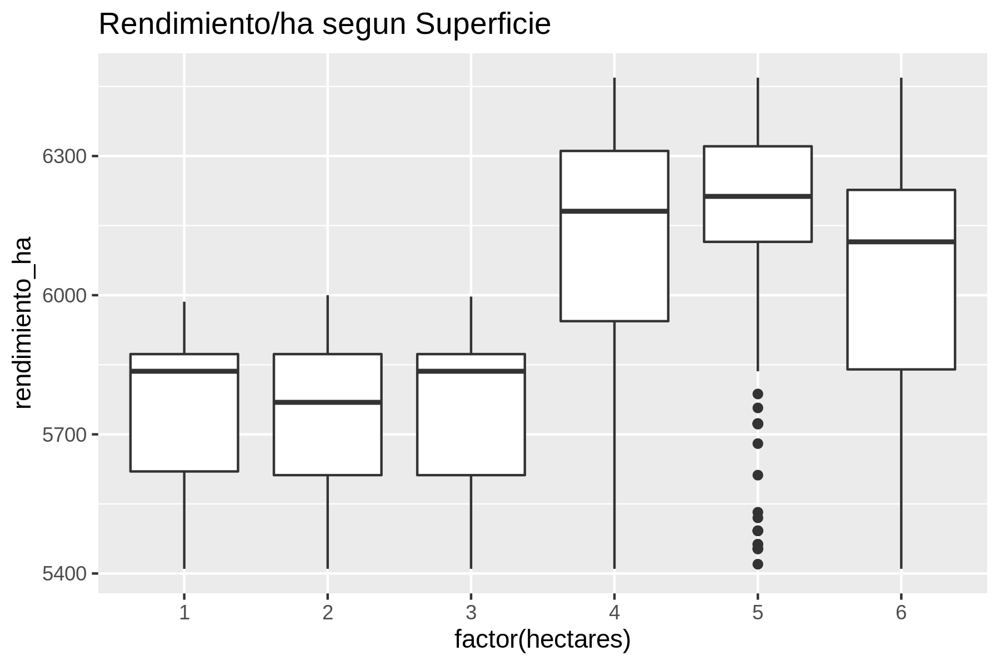
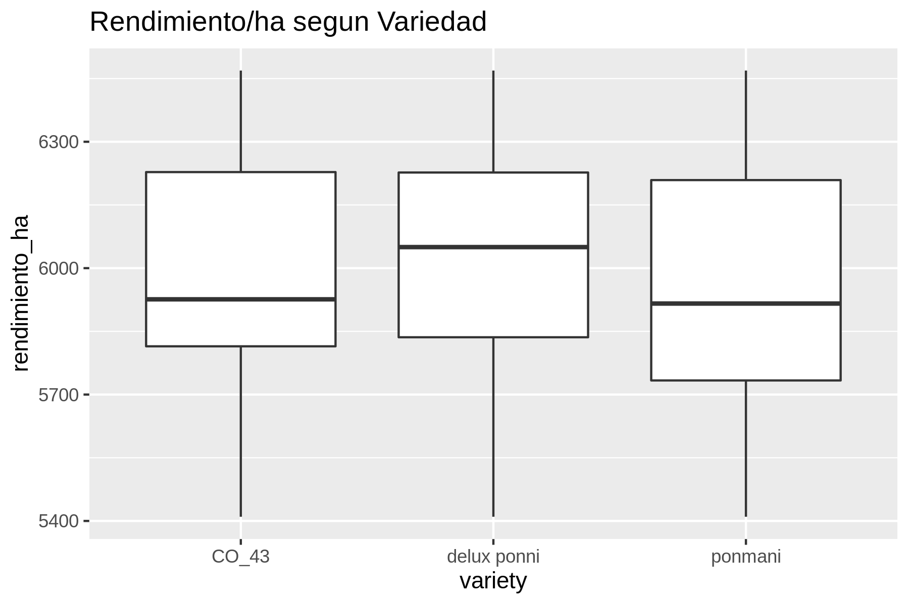

Nombre: Diego Castro Saavedra
Evaluación: Evaluación 1 — Análisis de Paddy Dataset
Fecha: 22 de octubre de 2026
Fuente de datos: Subramaniyan, M. (2023). Paddy Dataset [Conjunto de datos]. UCI Machine Learning Repository. https://doi.org/10.24432/C55W3J.
El análisis se desarrolló utilizando las siguiente herramientas de línea de comandos de Unix:
curl, unzip): Descarga automatizada del archivo comprimido desde el repositorio UCI y extracción en data/.file, head, cat -A, wc, tr, sed, sort, uniq, awk, csvstat): Inspección del tipo de archivo y caracteres ocultos, eliminación de retornos de carro DOS (\r), estandarización de encabezados a snake_case, validación de nulos y coherencia lógica, eliminación de duplicados exactos y creación de variables por hectárea.csvcut, csvstat, awk, python3, rush plot): Cálculo de estadísticos descriptivos, conteo de valores únicos (cardinalidad), verificación de invarianza de clima por bloque e insumos por hectárea, resúmenes agrupados, correlaciones de Pearson y gráficos de caja (boxplots).shuf, awk, vw, python3): Partición aleatoria reproducible 70/30 con semilla fija (42), conversión al formato de espacios de nombres de Vowpal Wabbit, ajuste de modelos lineales con pérdida cuadrática (--loss_function squared) y evaluación de MAE y R² en el conjunto de prueba.Al ejecutar file data/paddydataset.csv, la herramienta identificó el archivo como CSV text. Al inspeccionar las primeras líneas con head -n 5 data/paddydataset.csv | cat -A, se detectó que las líneas terminaban con el carácter de retorno de carro DOS/Windows ^M$ (CRLF, \r\n) y que los nombres de las columnas presentaban espacios finales (Hectares ), espacios internos, mayúsculas, barras (/) y paréntesis.
Se eliminaron los retornos de carro mediante tr -d '\r' y se normalizó el encabezado con tr y sed, obteniendo nombres simples y consistentes en snake_case:
| N° | Nombre Original | Nombre Nuevo | N° | Nombre Original | Nombre Nuevo |
|---|---|---|---|---|---|
| 1 | Hectares |
hectares |
25 | Max temp_D1_D30 |
max_temp_d1_d30 |
| 2 | Agriblock |
agriblock |
26 | Min temp_D31_D60 |
min_temp_d31_d60 |
| 3 | Variety |
variety |
27 | Max temp_D31_D60 |
max_temp_d31_d60 |
| 4 | Soil Types |
soil_types |
28 | Min temp_D61_D90 |
min_temp_d61_d90 |
| 5 | Seedrate(in Kg) |
seedrate_in_kg |
29 | Max temp_D61_D90 |
max_temp_d61_d90 |
| 6 | LP_Mainfield(in Tonnes) |
lp_mainfield_in_tonnes |
30 | Min temp_D91_D120 |
min_temp_d91_d120 |
| 7 | Nursery |
nursery |
31 | Max temp_D91_D120 |
max_temp_d91_d120 |
| 8 | Nursery area (Cents) |
nursery_area_cents |
32 | Inst Wind Speed_D1_D30(in Knots) |
inst_wind_speed_d1_d30_in_knots |
| 9 | LP_nurseryarea(in Tonnes) |
lp_nurseryarea_in_tonnes |
33 | Inst Wind Speed_D31_D60(in Knots) |
inst_wind_speed_d31_d60_in_knots |
| 10 | DAP_20days |
dap_20days |
34 | Inst Wind Speed_D61_D90(in Knots) |
inst_wind_speed_d61_d90_in_knots |
| 11 | Weed28D_thiobencarb |
weed28d_thiobencarb |
35 | Inst Wind Speed_D91_D120(in Knots) |
inst_wind_speed_d91_d120_in_knots |
| 12 | Urea_40Days |
urea_40days |
36 | Wind Direction_D1_D30 |
wind_direction_d1_d30 |
| 13 | Potassh_50Days |
potassh_50days |
37 | Wind Direction_D31_D60 |
wind_direction_d31_d60 |
| 14 | Micronutrients_70Days |
micronutrients_70days |
38 | Wind Direction_D61_D90 |
wind_direction_d61_d90 |
| 15 | Pest_60Day(in ml) |
pest_60day_in_ml |
39 | Wind Direction_D91_D120 |
wind_direction_d91_d120 |
| 16 | 30DRain( in mm) |
30drain_in_mm |
40 | Relative Humidity_D1_D30 |
relative_humidity_d1_d30 |
| 17 | 30DAI(in mm) |
30dai_in_mm |
41 | Relative Humidity_D31_D60 |
relative_humidity_d31_d60 |
| 18 | 30_50DRain( in mm) |
30_50drain_in_mm |
42 | Relative Humidity_D61_D90 |
relative_humidity_d61_d90 |
| 19 | 30_50DAI(in mm) |
30_50dai_in_mm |
43 | Relative Humidity_D91_D120 |
relative_humidity_d91_d120 |
| 20 | 51_70DRain(in mm) |
51_70drain_in_mm |
44 | Trash(in bundles) |
trash_in_bundles |
| 21 | 51_70AI(in mm) |
51_70ai_in_mm |
45 | Paddy yield(in Kg) |
paddy_yield_in_kg |
| 22 | 71_105DRain(in mm) |
71_105drain_in_mm |
46 | (Variable calculada) | rendimiento_ha |
| 23 | 71_105DAI(in mm) |
71_105dai_in_mm |
47 | (Variable calculada) | trash_ha |
| 24 | Min temp_D1_D30 |
min_temp_d1_d30 |
La ficha del repositorio UCI declara 2.790 instancias. El comando wc -l data/paddydataset.csv arrojó 2.790 líneas, que corresponden a 1 fila de cabecera y 2.789 filas de datos. La diferencia de 1 fila se debe a que el repositorio contabilizó la línea de encabezados dentro del total de instancias.
csvstat data/paddy_renamed.csv --nulls se comprobó que las 45 columnas tienen False (0 valores faltantes).awk se verificó que en ninguno de los 4 tramos (D1_D30, D31_D60, D61_D90, D91_D120) la temperatura mínima supera a la máxima (0 incoherencias), y que los valores de superficie (hectares > 0), residuos (trash_in_bundles >= 0) y rendimiento (paddy_yield_in_kg > 0) se encuentran en rangos plausibles y positivos (0 errores).Con tail -n +2 data/paddy_renamed.csv | sort | uniq -d | wc -l se detectaron 361 perfiles distintos repetidos. Al eliminar las repeticiones con sort | uniq, los registros pasaron de 2.789 a 2.338 filas únicas, eliminándose 451 copias duplicadas exactas. Se justificó su eliminación porque, al no existir identificador de predio ni fecha, las filas idénticas distorsionan las frecuencias reales y generan fuga de información entre entrenamiento y prueba.
| Paso del pipeline | Archivo | Líneas totales (wc -l) |
Filas de datos (sin cabecera) |
|---|---|---|---|
| 1. Archivo original | data/paddydataset.csv |
2.790 | 2.789 |
2. Conversión a Unix (tr -d '\r') y renombre |
data/paddy_renamed.csv |
2.790 | 2.789 |
| 3. Eliminación de duplicados (-451 copias) | data/paddy_dedup.csv |
2.339 | 2.338 |
4. Creación de rendimiento_ha y trash_ha |
data/paddy_clean.csv |
2.339 | 2.338 |
csvstat)| Variable | Mínimo | Mediana | Media | Máximo | Desv. Estándar | Valores Únicos |
|---|---|---|---|---|---|---|
hectares |
1 | 4 | 3,736 | 6 | 1,450 | 6 |
paddy_yield_in_kg |
5.410 | 24.644 | 22.610,118 | 38.814 | 9.265,185 | 477 |
rendimiento_ha |
5.410 | 5.964 | 5.985,004 | 6.469 | 289,353 | 175 |
csvstat --unique)agriblock (6), variety (3), soil_types (2) y nursery (2). En estas variables categóricas es esperable tener pocos valores distintos.hectares y las 10 columnas de insumos agrícolas tienen exactamente 6 valores distintos cada una, mientras que trash_ha tiene solo 3 valores distintos (80, 90 y 100 fardos/ha).Agriblock e insumos por hectáreaawk cada bloque junto con sus 24 variables de clima (sort | uniq | cut -d, -f1 | sort | uniq -c), cada uno de los 6 bloques (Chinnasalem, Cuddalore, Kallakurichi, Kurinjipadi, Panruti, Sankarapuram) presenta exactamente 1 combinación climática (1). Esto implica que el clima es constante dentro de cada bloque y solo actúa como etiqueta geográfica regional.hectares en las 2.338 filas (awk ... | sort | uniq -c), las 2.338 filas arrojan 1 única combinación constante (25 kg/ha de semilla, 12.5 t/ha abono campo, 20 cents/ha vivero, 1 t/ha abono vivero, 40 kg/ha DAP, 2 herbicida, 27.13 kg/ha urea, 10.38 kg/ha potasio, 15 kg/ha micronutrientes y 600 ml/ha pesticida). A su vez, trash_ha solo toma los valores 80 (831 filas), 90 (611 filas) y 100 (896 filas). Esto implica que los insumos fueron calculados multiplicando una receta fija por el número de hectáreas, sin variabilidad empírica entre agricultores.hectares |
N° de Registros | Rendimiento Total Medio (kg) | rendimiento_ha Medio (kg/ha) |
|---|---|---|---|
| 1 | 203 | 5.745,69 | 5.745,69 |
| 2 | 357 | 11.479,49 | 5.739,75 |
| 3 | 366 | 17.211,61 | 5.737,20 |
| 4 | 533 | 24.435,94 | 6.108,98 |
| 5 | 686 | 31.015,47 | 6.203,09 |
| 6 | 193 | 36.256,38 | 6.042,73 |
Variety, Soil Types, Nursery y Agriblock| Variable | Categoría | Media rendimiento_ha (kg/ha) |
Desv. Estándar (kg/ha) |
|---|---|---|---|
| Variety | delux ponni / CO_43 / ponmani |
6.005,74 / 5.990,02 / 5.962,30 | 285,78 / 293,96 / 288,19 |
| Soil Types | clay / alluvial |
5.987,96 / 5.981,50 | 289,93 / 288,77 |
| Nursery | wet / dry |
5.986,92 / 5.983,35 | 291,93 / 287,21 |
| Agriblock | Sankarapuram / Chinnasalem / Kurinjipadi |
6.003,52 / 5.989,77 / 5.986,52 | 291,00 / 292,84 / 289,89 |
| Agriblock | Kallakurichi / Panruti / Cuddalore |
5.978,08 / 5.972,58 / 5.972,11 | 282,88 / 291,53 / 287,57 |
hectares vs paddy_yield_in_kg = 0.9943: Correlación lineal positiva casi perfecta porque el rendimiento total depende directamente del área cosechada.hectares vs rendimiento_ha = 0.5949: Correlación positiva moderada-alta, producto del incremento de rendimiento por hectárea que se observa en las parcelas de 4 a 6 ha en comparación con las de 1 a 3 ha.

rendimiento_ha según suelo (6,46 kg/ha entre clay y alluvial), vivero (3,56 kg/ha entre wet y dry), bloque agrícola (31,41 kg/ha entre extremos) y variedad (43,44 kg/ha entre delux ponni y ponmani) son mínimas frente a la desviación estándar general (289,35 kg/ha).| Modelo | Variables Incluidas | MAE (kg/ha) | R² (Prueba) |
|---|---|---|---|
| Modelo Base | Promedio de rendimiento_ha del entrenamiento |
252,89 | -0,0577 |
| Modelo A (manejo) | variety, soil_types, nursery, trash_ha |
245,35 | -0,0140 |
| Modelo B (clima) | 24 variables numéricas de lluvia, temp., viento y humedad | 239,02 | -0,0045 |
| Modelo C (superficie) | Solo hectares |
179,73 | 0,3430 |
| Modelo D (todas) | Todas las variables de A, B y C | 177,13 | 0,3413 |
paddy_yield_in_kg usando solo hectares): MAE = 836,44 kg, R² = 0,9870.hectares) es el único grupo que aporta señal predictiva sustantiva.rendimiento_ha porque normaliza el efecto de tamaño y mide la eficiencia productiva por unidad de tierra.El pipeline genera e imprime automáticamente el archivo report/ficha.txt:
Programa de Extension Agricola - Ficha de Asesoria
Asesor: dst
Registros unicos analizados: 2338
Rendimiento medio: 5985.00 kg/ha
Superficie de mayor rendimiento medio: 5 ha
R2 del modelo de superficie (prueba): 0.3430
(i) Insumos normativos sin variación real: Los 10 insumos agrícolas son múltiplos exactos de la superficie (hectares), reflejando una tabla teórica de recomendación y no la dosis real aplicada en cada parcela.
(ii) Clima agregado por bloque: Las 24 variables meteorológicas tienen un único valor por cada agriblock, impidiendo distinguir variaciones microclimáticas o entre temporadas.
(iii) Alta proporción de duplicados y baja dispersión: Se encontraron 451 copias duplicadas exactas en el archivo bruto y una desviación estándar muy reducida (~289 kg/ha sobre una media de 5.985 kg/ha), lo que sugiere datos altamente estandarizados o sintéticos.
Conclusión: El análisis demuestra que, una vez depurados los 451 registros duplicados (quedando 2.338 registros únicos), las variables de manejo y clima no poseen capacidad predictiva sobre la eficiencia del cultivo debido a su falta de varianza en el dataset. El único predictor que explica parte de la variación del rendimiento por hectárea es la superficie (hectares, R^2 = 0,3430), impulsado por el salto de rendimiento registrado en los predios de 4 y 5 hectáreas.
Recomendación al Programa de Extensión Agrícola: Se recomienda verificar primero en terreno si el salto de rendimiento observado en los predios de 4 a 5 ha es un fenómeno agronómico real o un artefacto de cómo se construyó el dataset antes de utilizarlo para recomendar prácticas a los agricultores. Asimismo, es indispensable rediseñar la recolección de datos en futuras campañas para medir las dosis de insumos realmente aplicadas por parcela, asignar identificadores únicos de predio e incorporar mediciones meteorológicas locales.
El proyecto, ya cuenta con los permisos para su ejecuccion, basta con utilizar el comando bash scripts/pipeline.sh y se ejecutara la siguiente secuencia: (1.1) descarga, limpieza de formato, validación de nulos/coherencia, deduplicación y cálculo de data/paddy_clean.csv; (1.2) estadísticos, cardinalidad, pruebas de clima/insumos, correlaciones y gráficos PNG en report/; (1.3) partición 70/30, entrenamiento en vw y tabla de métricas; y (1.4) creación e impresión de report/ficha.txt.